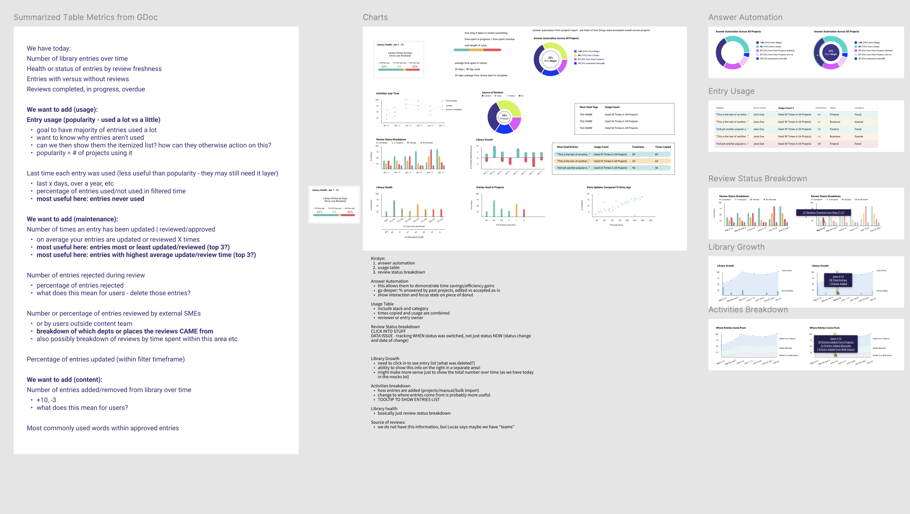
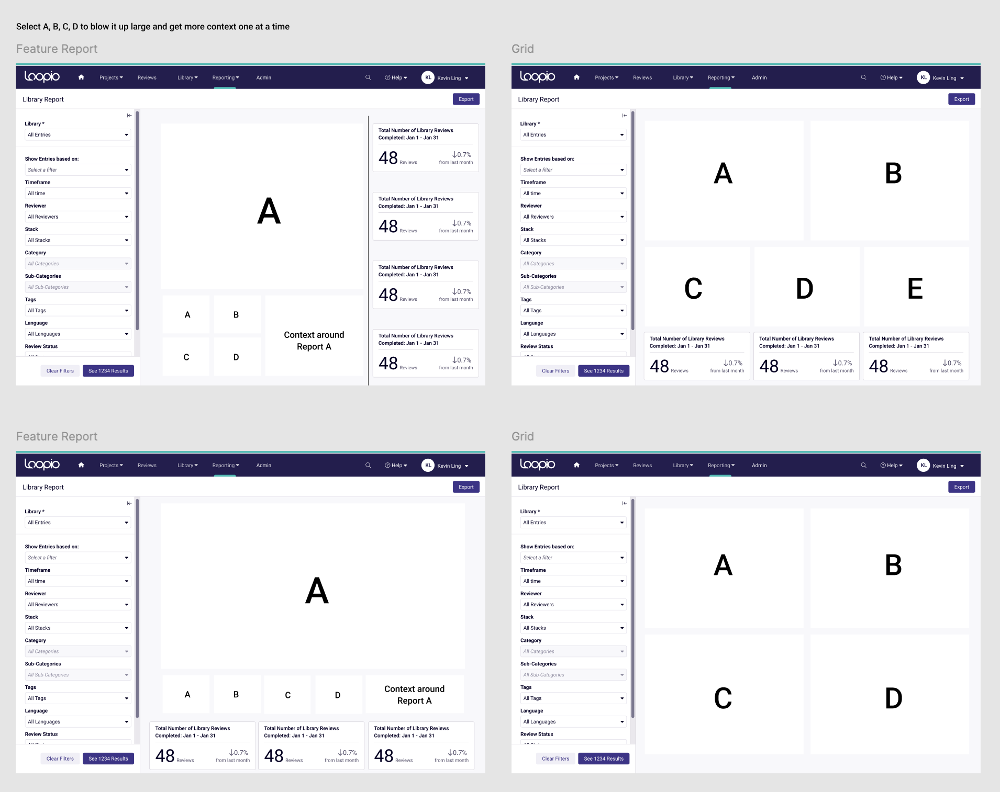

The goal of the project is to bring meaning to the usage metrics of our clients’ content libraries and increase success rates of their bids on Requests for Proposals (commonly shortened to RFPs). We aimed to make a tool for our users to measure the effectiveness of their content in responding to RFPs, and whether the content is effective enough to win current and future bids.
Problem Definition
The Loopio platform provides a space for users to maintain a library of content used to respond to RFPs. This questionnaire response process is the main way our clients obtain work, so keeping an exemplary library of content that is ready for use in questionnaires is extremely important to them.
Loopio helps clients to measure the “health” of each piece of library content to ensure it is up to date. A lean library is the best tool to quickly answer RFPs, so our clients will often assign an internal role of “Loopio champion” who will keep the library in good shape. The champion needs the answers to metrics-based questions like “Were these pieces of content updated by anyone in the last six months?” and “Which common RFP questions do I not currently have answers for inside the library?” Their task is to find gaps to close, old content to freshen, and unused content to remove. The legacy report below helped them to answer some of these questions, but had many data gaps.

The legacy report was not much more than a table, missing visualizations or key actionable metrics. Half of this table was completely hidden in overflow to the right. Upon later interviews with some of our Loopio champions, many of them were unaware that the table could scroll at all, leaving that data unseen.
Research Methods
There were many client requests to our customer service team for custom data exports that the Library Report could not answer for them. From these requests we were able to put together a list of the most requested data and create first iterations of charts.
I presented that data to my team in a “what if” brainstorm jam to test the limits of what we could do with the page. I then collected and synthesized all the ideas and combined them into my designs.

With a rough visual of the new report in hand, we conducted six internal calls with customer success managers and eight external client calls around what users would expect from reporting for their library content. Interviewees requested:
- A visual dashboard of their data
- To see how the data has changed over time
- To customize their report based on user or business needs
- More data and understanding around usage, review status, and suggested actions to improve library usage
- Filtering by specific elements to see the piece of the story they care about most
- Ability to share elements of the report with their leaders

The key outcomes and organization of all the research activities.
Personas

The redesign focused mainly on our persona Mary, empowering her to make data-driven decisions to increase the health of her content library. That in turn would increase Ray’s confidence in the library content as a tool to respond to RFPs, and increase Kara’s confidence that Loopio is providing tools to help her company win more RFP bids.
Measuring Success
Increase deals won by filling reporting feature gap
We were losing deals due to our lack of reporting that meets client needs. Worse yet, this was the leading cited reason for enterprise-level prospects who ultimately selected our competition.

Increase library report pageviews
This project aimed to raise our company’s north star metric of percentage of users deploying content and generally using Loopio itself. The page was receiving roughly 1000 unique pageviews per month before the redesign. I’ll share the increase we achieved further down the page.

Improve Usability
We had a great opportunity here to fix the issues on the existing page: the table hiding half of its content, the inflexibility of the filtering feature, and the lack of any visuals to better display the rate of health.
Decrease amount of PS requests
Our professional services team was taking a considerable amount of time in providing custom data exports to customers who needed metrics simply not accessible through the legacy report. If we added that data to the report we could easily save them that time.
Wireframes
There were two major elements to consider in the visual redesign - the charts chosen for data and the way they were displayed, as well as the layout of the dashboard view of the report to be able to show information in the correct hierarchy.
The most requested data made its way into a visual chart, of which I ideated over several kinds of charts, bar, pie, line, scattered, etc) to understand which would best showcase the data.
The addition of charts to the page brought layout concerns. I explored various options here around how to size the charts, where to put the table of data (which was important but now secondary) and what order to put them in on the page.
In a future iteration we will allow our clients to resize and reorder the charts to their own customizations.
Final Design & Prototype
Selected design details:
- The filtering sidebar gives many more options than before, and it is more accessible as a collapsible sidebar rather than the previous modal which covered the charts when in use
- Users can hover over any chart element to understand the exact number and label without having to squint or align elements
- Users can also click or select chart elements to filter the data based on that element (a shortcut instead of using the filtering sidebar)
- Whenever filtering is activated, the chart view clearly states this so there is no confusion over the state of the data
- The chart is refreshed every 60 minutes to provide up-to-date information, but users can select to refresh at any time
- We also improved the exported .xlsx file for users who prefer to view and manipulate their data in Excel as they wish


Prototype
Release

We ran a 75-participant beta program for four months, during which you can see steady adoption from November to February of 2024. Then, in two short months since our February launch, the new Library Report eclipsed the legacy report in view counts (passing 2000 views per month).
Customer Quotes
“This is awesome, definitely. I see this allowing us to draw a line in the sand and start with a base set of data that we can progress monthly…this would be great.” - global telecommunications company
“My eyes are sparkling, I am very excited about how I can play around with this.” - international bank
“This is all we need” - not for profit org
“I’m most excited about the fact that I don’t know how I will use this but I know it contains the information in the format that I want it. I am really looking forward to not having to sort manually.” - technology startup
“I as an admin would like to see this view, this will make our lives a whole lot easier” - construction logistics company
Post-launch

Now, almost a year later, the report is seeing a steady 2x the amount of views that the legacy report did at roughly 2200 pageviews per month
Future of this project
We have seen great success in the first release of the Library Report, but there is still lots of opportunity to extend the project. While the current charts and data can give users clear actions to improve their metrics, all of these actions exist in other areas of the Loopio platform. Because of this, there could be opportunity in bringing these charts into those other areas rather than keeping them in their own reporting area.
This current design does a good job of showing a snapshot of the latest data, but does not yet compare data over time. We are exploring the ability to compare past and current data, combined with artificial intelligence to predict future trends. Utilizing AI, we can give users a glimpse into where their data may be going, and what actions they can take to change the direction to a more favourable outcome for their business.

Here is an example of how ChatGPT could allow users to bypass filtering and create a human-friendly conversation to find exactly the answers and predictions they need.